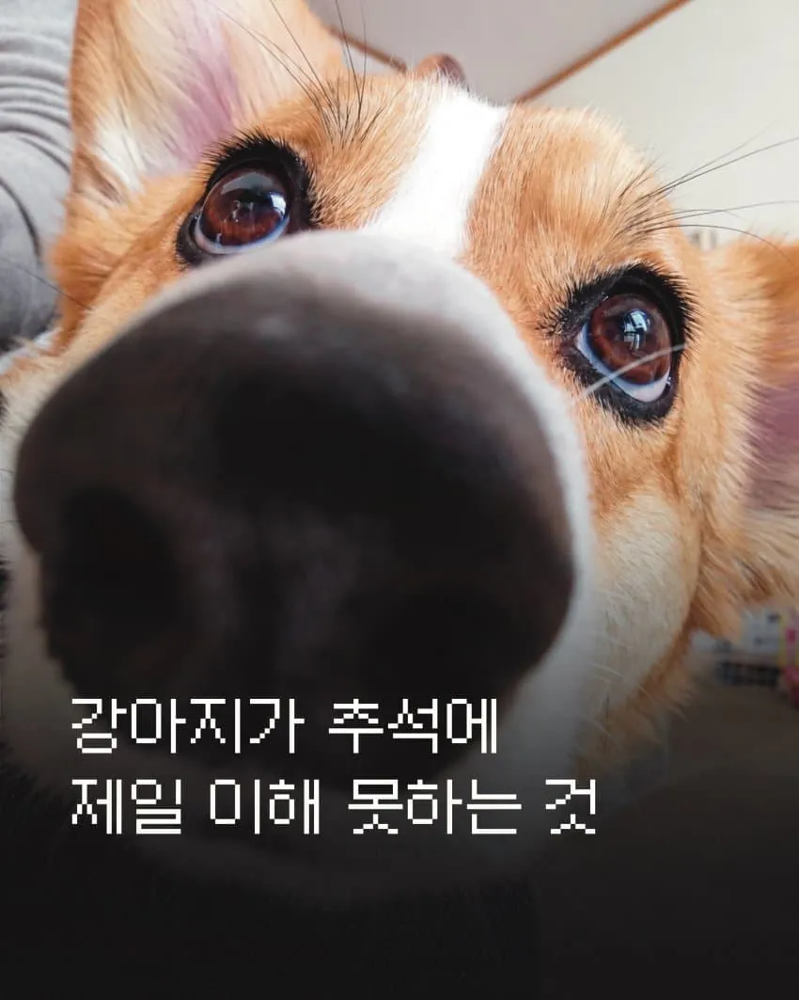
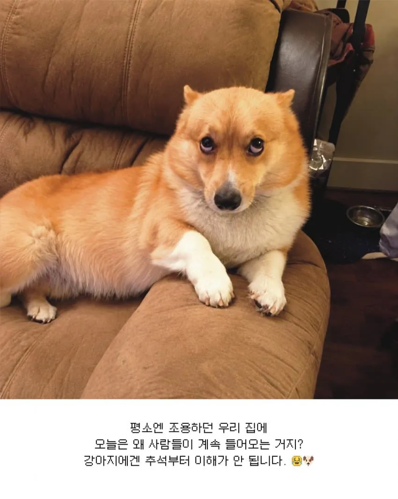
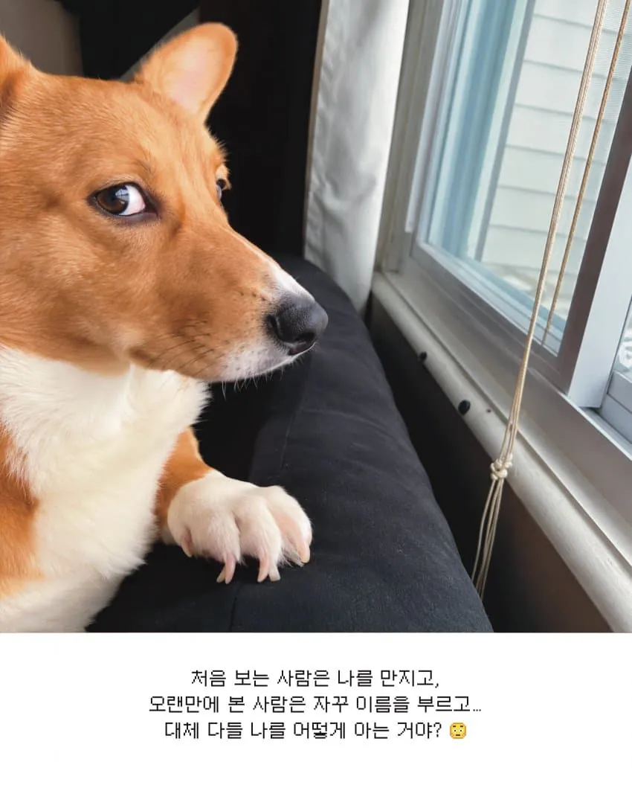
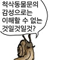

걍 전부 ai 짤같은데 ㅋㅋㅋ

추석에 강아지 고양이 포식하는날 아님?
사촌들와서 간식 한번씩 주고나면 배불러서 밥도 안먹는데

우리는 미리 간 안 한 고기 따로 익혀서 주는데
강아지가 3일 내내 사료 안 먹고 돼지고기 소고기 닭고기 생선만 먹고 감
저..... 개*끼들이... 뭐하는거지???? ㅋㅋㅋ
아동이 2명 이상이면 개 입장에선 진돗개 둘 상황임.
그렇게 발발거리던 녀석이 기진맥진해서 거실 한켠에 숨죽이고 있음.
최악의 날이네
스트레스 오지게 받아서 잠도 잘 안자다가 추석 끝나면 엄청잠
비상!!!! 공습경보 공습경보!!!
경찰력 총동원!!!
2번짤 발톱이 원래 저런건가?